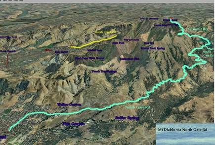
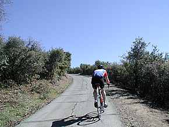

Week 3: Mt. Diablo
28 Oct 2006
|
2006 Low-Key Hillclimbs Week 3: Mt. Diablo 28 Oct 2006 |
|  |
| Aerial photo of Mt. Diablo, courtesy of Stanford Cycling |
|  |
| The final push, from chainreaction.com |
Mount Diablo, one of the big three in the Bay Area, with Mt Tam and Mt Hamilton. Yet of the three it is by far the longest sustained effort. In Low-Key's past, we've climbed the south side of the mountain, the one used by the Mt Diablo Challenge held early each October, and the Devil Mountain Double each April. This year, we tackle the north side. In July, the Contra Costa Cycling Club promoted an excellent time trial up the bare slopes of North Gate Road. However, logistical limitations prevented the race from finishing the job up Summit. Even though the 1800 vertical feet of that race is a sizeable climb, rivaled by few others in the Bay area, there was a feeling of unfinished business about it. Low Key finishes the job. We go all the way, all the way to the final 250 meters whose 15% grade tests the will already drained by the efforts of the preceding well over 3000 vertical feet.
Although the effort to climb Diablo is substantial, the view from the summit is worth it, and worth all the more by the effort it took to reach it. Can the experience be rivaled by motor-borne siteseers? Hardly. At the top, making eye contact with one of those who drove there, you smile to yourself, thinking they cannot possibly understand.
Mount Diablo weather information is available here.
Our insurance demands it: helmets are required. Sorry kids, no exceptions!
We'll stage at Northgate High School at 425 Castle Rock Rd in Walnut Creek, then ride together to the gate on North Gate Road, where the timer will start.
BART is recommended: either Walnut Creek or Pleasanton. See BART's web site for details.
If you drive, consider parking in Walnut Creek, and riding to the school, to prevent congestion.
| stats | 10.8 miles, 3600 ft, 6.3% |
| format | mass start |
| time | reg 9 - 9:45 start 10am |
| coordinator | |
| aerial view | Stanford Cycling #1 Stanford Cycling #2 |
| route profile | ACTC profile ACTC profile page |
| weather | Weather Underground Weather Bonk summit (current) |
| registration form |
PDF form |
{kind=link}
{kind=link}